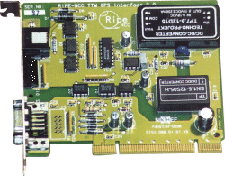

Last update: 21-Oct-2010 23:44 UTC
This is a special driver developed to be used in conjuction with the RIPE NCC clock card in the RIPE NCC Test Traffic Measurements project.
The reason why we created a seperated driver for an antenna for which already a (vendor supplied) driver exist is a design decision. To be more specific, the standard Trimble interface uses a 12 pin connector. The cable sold by Trimble to connect to this wire is a very thick cable. Certainly not something you wish to run for several 100 meters through your building. And if you wanted to run it for 100 meters, you always would have to really run the cable, and didn't have the option to use existing wiring.
This is where we wanted more flexibility. We wanted to be able to use existing wiring in buildings. That leaded us to CAT-5(UTP) which only gives us 8 wires. Therefor we decided to redesing the use of the Trimble antenna. The Trimble supports two modes: EVENT driver and PPS mode. The default is to use the EVENT mode which needs all 12 wires. We only use the PPS timestamps for which we have enough with 8 wires. For our purposes this is more than fine.
More information about the project can be found on the Test Traffic Measurements website. The card is very a simple PCI card. The only feature on the bus it uses is the power supply. It uses this power supply to power the Trimble GPS antenna.
The card basicly just is a RS422 to RS232 converter. It gets the Trimble's RS422 signal on a RJ45 connector and transforms that to RS232 on a DIN9 connector. This connector should be loopbacked on the back of the machine to the serial port. As said, the card doesn't do any PCI data transfers.
The schematics of the interface card is available here: gps_interface_schematic.pdf. You are free to create this card yourself as long as you give some credit or reference to us. Note that we don't sell these cards on a commercial basis, but for interested parties we do have some spares to share.
In the filegen clockstats file the following (example) data is collected:
52445 41931.275 127.127.40.0 U1 20.6.2002 11:38:51 13 11 52445 41931.395 127.127.40.0 C1 20062002 113851 6 364785 110.2 450 6.7 13 5222.374737 N 0453.268013 E 48 7 11 0 1 -14 20 0 -25 52445 41931.465 127.127.40.0 S1 07 1 1 02 59.3 291.5 39.3 52445 41931.485 127.127.40.0 S1 11 2 1 02 59.9 138.0 60.2 52445 41931.525 127.127.40.0 S1 01 4 1 02 48.4 185.7 28.3 52445 41931.555 127.127.40.0 S1 14 5 2 02 32.7 41.0 15.4 52445 41931.585 127.127.40.0 S1 20 6 1 02 59.9 256.6 78.0 52445 41931.615 127.127.40.0 S1 25 8 2 00 0.0 86.6 20.1
This is in the form of:
All output lines consist of a prefix and a message, the prefix is: [days since epoch] [sec.ms since start of day] [peer address] And all individual messages: *Primary UTC time packet: U1 [date] [time] [trackstat] [utcflags] *Comprehensive time packet: C1 [date] [time] [mode] [bias] [biasunc] [rate] [rateunc] [utcoff] [latitude] [longtitude] [alt] [vis sat](x8) *Tracking status packet: S1 [prn] [channel] [aqflag] [ephstat] [snr] [azinuth] [elevation]